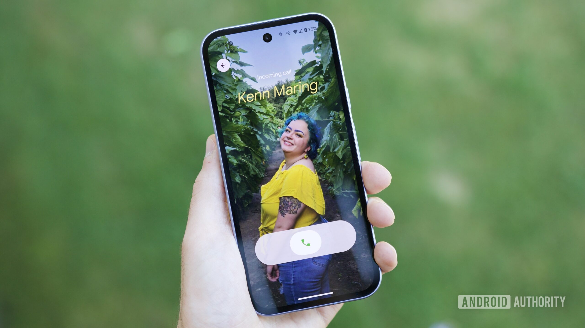
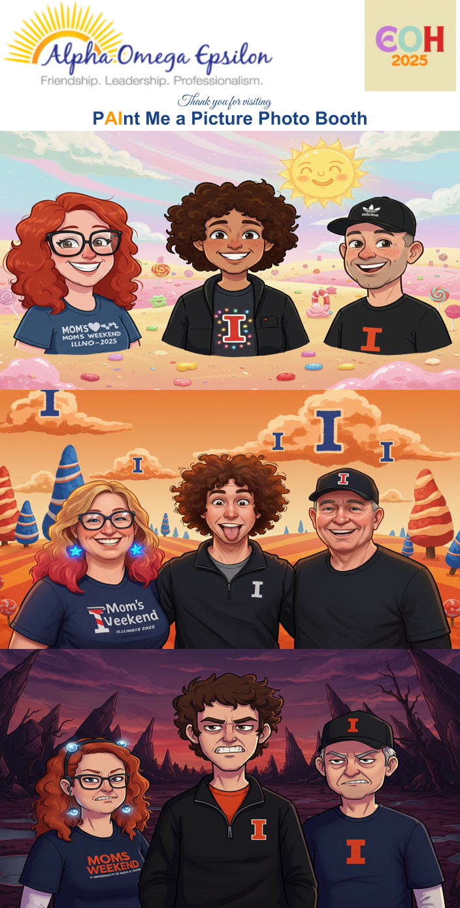
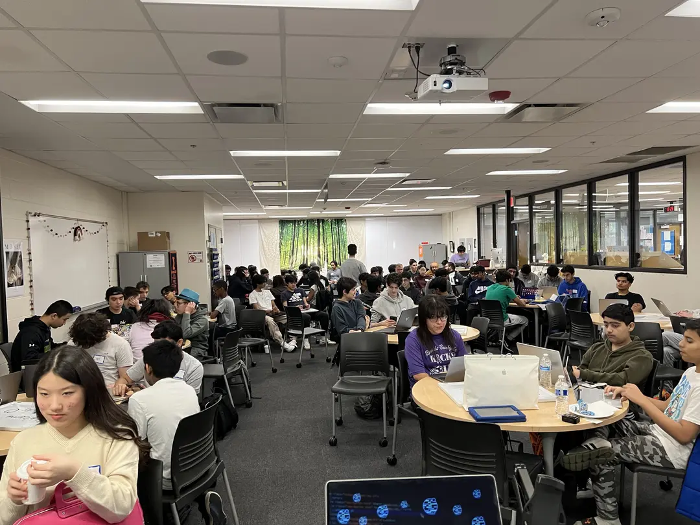
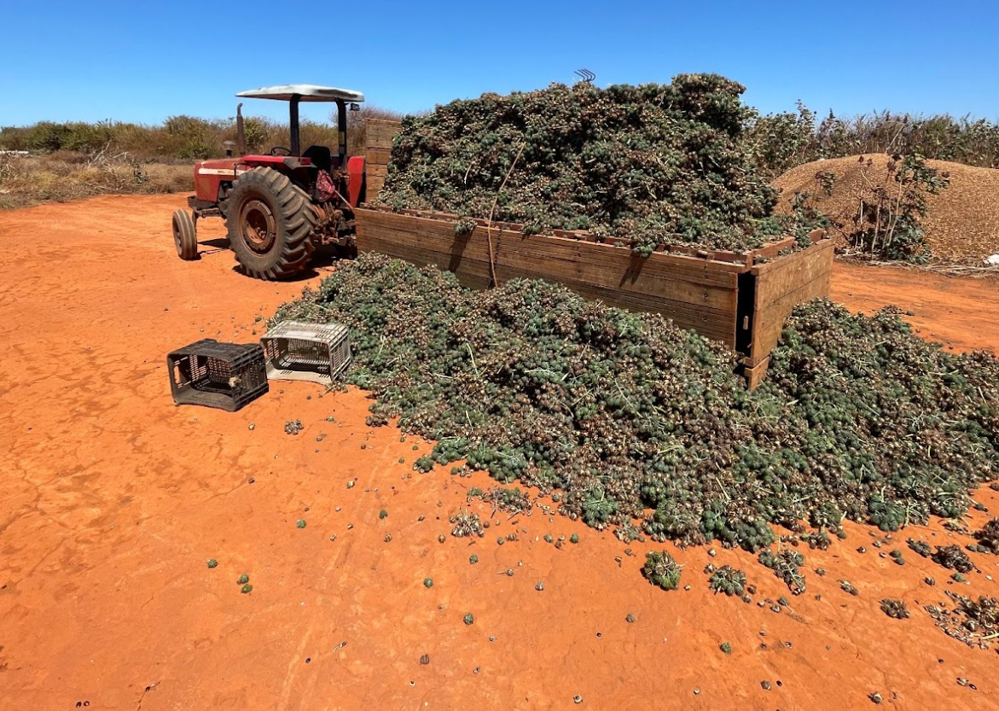
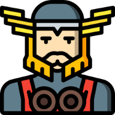
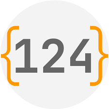
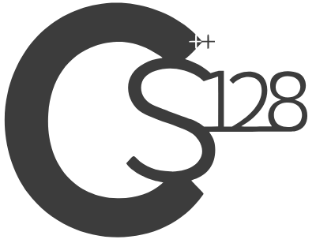
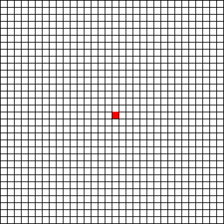
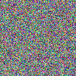

Kotlin, Jetpack Compose, Design Docs, Data Services, State Management

As part of my software engineering internship at Google, I end-to-end engineered a feature for Android's Calling Card.
Designed and implemented an internal Material Color Utilities API that allows developers to find contrasting text on top of images, making it easier to support accessibility goals for ~800 million colorblind and low-vision users.
Used the utilities API to build contrasting "smart colors" that dynamically match the hue of user images for the Android Calling Card—a feature used by 600 million daily active users and 7 billion daily calls.
Collaborated end-to-end with UX designers and tech leads to navigate Google's multi-billion-line codebase, writing production-level code with a focus on multi-threading, state management, and data services.
AI Photobooth
Python, Streamlit, Vertex API

For UIUC's Engineering Open House, I created an AI photobooth to get kids excited about computers and show them that technology and creativity can go hand in hand.
Captured photos of visitors, analyzed their facial expressions/emotions, and dynamically generated themed backgrounds using generative AI models.
Attracted over 300 visitors over two days, serving as an interactive demo to teach guests about the limitations and opportunities of generative media.
Built a background automated pipeline to save, stitch, and email the photo strips to visitors as a personalized keepsake from the fair.
Louvre Capture The Flag
Python, Flask, Linux, Git
This is a 9-challenge CTF quest where users learn about cybersecurity domains by playing a game where they attempt to pen-test the Louvre.
Led the team development, structured the overall application roadmap, and authored the technical setup and testing frameworks.
Programmed 7 of the 9 core cybersecurity challenges along with the interactive site map, landing page, UI styles, and input validation layers.
Collaborated on pull requests, performed code reviews, and integrated feedback to maintain a clean codebase in Git.
Veterans x Volunteers Hackathon Submission
HTML, CSS, JS, Google Apps Script

This project was made in a team of 3 during a 12-hour hackathon, where we won First Place overall out of more than 120 participants.
Developed a platform for a veteran-support nonprofit that allows organizers to post mental health events and lets veterans and volunteers register.
Integrated Google Apps Script to dynamically compile registration metrics into spreadsheets and generate dashboard tools for instant mass email updates.
Crop Counter for Brazilian Nonprofit
Python, various LLM APIs, Google Sheets scripts

As a UIUC Grainger Career Scholar, I worked in a group of four to research the viability of using AI to count crops in partnership with Toca, a Brazilian nonprofit supporting family farmers.
Researched computer vision tools to help family farmers calculate crop volumes independently, eliminating their reliance on third-party pricing metrics.
Evaluated models to handle the irregular shapes of natural castor beans, addressing recognition challenges by incorporating volume-to-area density estimations.
Created a tracking utility that lets organizers input physical batch weights to cross-validate and audit the accuracy of our statistical models.
Asgard
Python, Flask, HTML, CSS, JS

This project was built during my research internship at Loyola University Chicago's Software and Systems Laboratory.
Designed the user interface and frontend system to let researchers upload and test computer vision models on physical hardware clusters.
Assisted with cluster hardware configurations to measure performance metrics on low-powered devices, optimizing models for mobile environments.
CS 124 Project
Android Studio, Kotlin, Git

Built as an assignment for my introductory computer science course to display student clubs and organizations at UIUC.
Implemented client-side search functionality and dynamically sorted club structures based on user queries.
Created a localized bookmarking system to let users star, store, and filter their favorite campus activities.
CS 128 Projects
C++

Completed a series of core systems programming projects to master pointers, dynamic memory, and algorithm optimization.
Engineered an elementary database manager supporting operations to dynamically build, modify, print, and delete tables, rows, and columns.
Coded a DNA analysis system using linked lists to scan genetic records and identify matches.
Implemented an image-resizing system using the seam carving technique, writing an optimized pathfinding algorithm on dynamic 2D arrays to recalculate pixel paths with minimal distortion.
CS 225 Projects
C++

Completed various projects for my data structures course to focus on memory management, performance, and graph theory.
Built a sticker utility using HSL color mapping and custom memory allocations to practice safe pointer manipulation.
Wrote a generic Template List class to build, traverse, reverse, and filter linked memory models using standard C++ iterators.
Created a mosaic image builder that parses tile assets using k-d trees and an optimized nearest-neighbor search (NNS) algorithm.
Programmed a canvas flood-fill algorithm to traverse, paint, and transition image buffers dynamically.
Designed a randomized maze generator and solver utilizing the disjoint sets data structure to prevent cycles.
Coded a tile puzzle solver using graph algorithms to evaluate states too large to store in local memory.
AI Projects
Python

Developed a collection of self-directed projects to experiment with machine learning fundamentals outside of coursework.
Created an evolutionary pixel-art generator to study visual distance metrics and coordinate generation speeds.
Wrote a mock speech generator using Markov chains trained on music catalogs, experimenting with dataset poisoning techniques.
Built custom local implementations of stochastic gradient descent (SGD) and Adagrad from scratch to study optimization models.